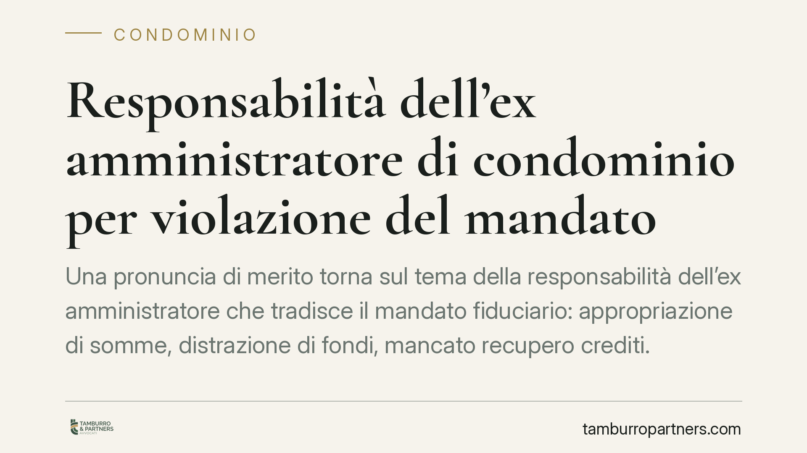

Responsabilità dell'ex amministratore di condominio per violazione del mandato
Una pronuncia di merito torna sul tema della responsabilità dell'ex amministratore che tradisce il mandato fiduciario: appropriazione di somme, distrazione di fondi, mancato recupero crediti. Ne discendono obblighi di restituzione e risarcimento. Il condominio dispone di strumenti precisi per reagire, ma i tempi e gli adempimenti preliminari vanno valutati con attenzione.

Il caso
Secondo quanto riportato, il Tribunale di Nocera Inferiore (sent. n. 1975/2025) avrebbe affermato la responsabilità di un'ex amministratrice per aver violato il mandato ricevuto dal condominio: appropriazione di somme, distrazione di fondi comuni e omissione nel recupero dei crediti condominiali. L'esito sarebbe duplice: obbligo di restituire quanto indebitamente trattenuto e risarcimento del danno ulteriore.
*Nota: gli estremi della pronuncia (numero, anno, sezione) devono essere verificati sulle fonti ufficiali prima di qualsiasi utilizzo processuale. Li riportiamo qui in forma informativa e da confermare.*
Inquadramento normativo
Il rapporto tra condominio e amministratore ha natura di mandato. L'art. 1710 c.c. impone al mandatario di eseguire l'incarico con la diligenza del mandatario: la vecchia formula del "buon padre di famiglia" è ormai superata nel linguaggio codicistico. Per l'amministratore, che svolge un'attività professionale, il parametro si lega all'art. 1176, comma 2, c.c., che richiede la diligenza qualificata propria di chi esercita un'attività professionale.
La violazione di questi obblighi genera responsabilità contrattuale. Quando l'entità del danno non è provata nel suo preciso ammontare ma è certa nell'esistenza, il giudice può procedere alla liquidazione equitativa ai sensi dell'art. 1226 c.c. L'azione, avendo natura contrattuale, è soggetta alla prescrizione decennale (art. 2946 c.c.), che decorre dal momento in cui il diritto può essere fatto valere.
Sul fronte della mediazione, la materia condominiale rientra tra quelle a condizione di procedibilità (D.lgs. 28/2010, nella formulazione aggiornata dalla riforma Cartabia – D.lgs. 149/2022, artt. 5 e 5-bis). Secondo la lettura offerta dalla pronuncia in esame, l'azione di responsabilità del mandante nei confronti del mandatario non richiederebbe il previo esperimento della mediazione obbligatoria. Si tratta però di un profilo delicato e non unanime in giurisprudenza: l'inquadramento della singola domanda (contrattuale pura, restitutoria, recuperatoria) incide sulla risposta. Va dunque valutato caso per caso, evitando di dare per scontato il superamento di un adempimento che potrebbe invece risultare dovuto.
Implicazioni pratiche
Per il condominio, la pronuncia conferma che l'ex amministratore risponde non solo delle somme trattenute, ma anche dei pregiudizi derivati dalla sua inerzia: tipicamente, i crediti verso i condòmini morosi lasciati prescrivere o non azionati.
Due aspetti meritano attenzione. Primo: la documentazione contabile è il perno della controversia. Senza un passaggio di consegne ordinato e senza accesso ai registri, ricostruire gli ammanchi diventa complesso. Secondo: il fattore tempo. Più tardi emergono le irregolarità, più alto è il rischio di dispersione del patrimonio dell'ex amministratore e di maturazione di prescrizioni sui crediti condominiali.
Per l'amministratore in carica, la decisione è un monito sulla rendicontazione trasparente e sulla tempestività nelle azioni di recupero. L'omissione, non solo l'appropriazione, può fondare responsabilità.
Cosa fare in concreto
- Verificate la contabilità dell'intero periodo di gestione: estratti conto del corrente condominiale, registro di contabilità, giustificativi di spesa e corrispondenza con la morosità.
- Pretendete un passaggio di consegne completo e documentato, formalizzando per iscritto eventuali mancanze o anomalie riscontrate.
- Portate la questione in assemblea e fate deliberare l'azione di responsabilità: la legittimazione ad agire presuppone una delibera che autorizzi l'amministratore in carica a procedere.
- Mappate i crediti condominiali potenzialmente prescritti o non azionati: sono una delle principali voci di danno imputabili all'inerzia del precedente amministratore.
- Dove emerga un concreto rischio di dispersione patrimoniale, può essere opportuno valutare una misura cautelare (ad esempio il sequestro conservativo), sempre previa verifica dei presupposti con un legale.
Prima di avviare la causa, consigliamo di chiarire se la specifica domanda richieda la mediazione, data la non uniformità degli orientamenti, e di monitorare i termini di prescrizione dei singoli crediti.
Disclaimer
Contributo informativo a cura di Tamburro & Partners – Avv. Giuseppe Tamburro. Non costituisce parere legale. Gli estremi della pronuncia citata sono da confermare sulle fonti ufficiali.
Ogni condominio ha una storia a sé.
Se gestisci un'amministrazione e vuoi un confronto su una specifica questione condominiale, scrivi allo studio. Ti rispondiamo entro un giorno lavorativo.